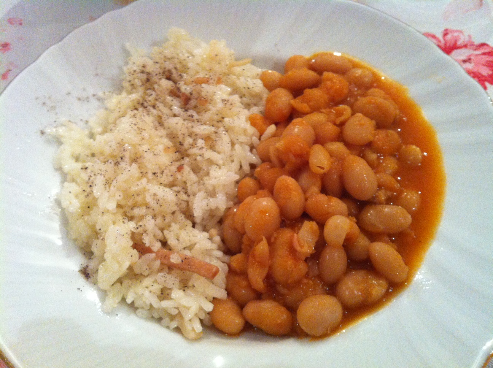

Kuru Fasulye Pilav Tarifi

Kuru fasulye pilav nasıl yapılır?
Kuru fasulye pilav, Türkiye'nin en meşhur yemeklerinden birisidir. Kuru fasulye pilav hem doyurucu hem de lezzetlidir.
Haydi kuru fasulye pilav nasıl yapılır bakalım.
Kuru Fasulye Pilav Tarifi İçin Malzemeler
Kuru Fasulye için;
- 2 su bardağı kuru fasulye
- 1 adet kuru soğan
- 2 adet domates
- 2 adet sivri biber
- 100 gram kıyma
- Yarım yemek kaşığı salça
- Tuz
- Karabiber
Pilav için;
- 2 su bardağı pirinç
- Yarım çay bardağı arpa şehriye
- 1 yemek kaşığı tereyağı
- Tuz
- 2 su bardağı su
- 1,5 su bardağı sıcak tavuk suyu (yoksa toplamda 3,5 su bardağı normal sıcak su konmalı)
Kuru Fasulye Pilav nasıl yapılır?
Kuru Fasulye Yapımı;
- Kuru fasulyeyi 1 gece önceden ıslatıyoruz. Pişireceğimiz gün haşlıyoruz.
- Bir tencereye sıvı yağımızı ve kıymamızı alıyoruz ve kavuruyoruz.
- Doğradığımız kuru soğan ve yeşil biberi de ekleyerek, kavuruyoruz.
- Üzerine domates ve yarım kaşık salçayı ekleyip, 5 dk kadar pişirip, üzerine haşlanan kuruyu ekliyoruz.
- Tuz, karabiber ve defne yaprağını da ekleyip, üzerine 2 parmak geçecek kadar sıcak su ekleyip pişiriyoruz.
Pilav Yapımı;
- Pirinçlerimizi pilav yapmadan 1 saat önce ıslatıyoruz.
- Bir tencereye tereyağını koyup, arpa şehriyelerimizi kavuruyoruz.
- Üzerine, ıslatıp sonra süzdüğümüz pirinçleri ekliyoruz.
- Tuzunu ekleyip, 2 su bardağı sıcak su ve varsa 1,5 su bardağı tavuk suyunu koyup, kısık ateşte pişiriyoruz.
- Demlenmeye bırakıp, servis ediyoruz.
Afiyet Olsun!